神经网络可以利用图的结构与属性。本文逐步介绍构建图神经网络所需的组件，并解释背后的设计选择。
译自 Distill。正文和图注已译为中文，图形和交互沿用作者发布的实现。原文及其原创图示采用 CC BY 4.0。
这是 Distill 介绍图神经网络的两篇文章之一。另一篇《理解图上的卷积》
图随处可见。现实中的对象经常由它们与其他事物的联系来定义。一组对象及其联系可以自然地表示为图。研究者开发可处理图数据的神经网络，即图神经网络（GNN），已有十多年
本文分四步介绍现代图神经网络。先用实例识别适合用图表示的数据，再讨论图与其他数据的区别及建模选择。接着从最简单的模型出发，沿着关键的历史进展逐步搭建现代 GNN。最后，你可以在 GNN 实验台操作真实任务及数据，观察各组件怎样影响预测。
先定义图。图用边表示一组实体，即节点之间的关系。
为了描述节点、边或整张图，可以在这些位置存储信息。
还可以为边赋予方向，得到有向图或无向图。
图是一种灵活的数据结构。下面通过具体例子说明。
你可能熟悉社交网络这样的图数据。图也是一种通用的数据表示。图像和文本看起来不太像图，但用图表示它们，有助于看清其中的对称性和结构，也能为理解后文更不规则的图打下直觉基础。
图像通常被表示为带颜色通道的矩形网格，例如一个 244×244×3 的浮点数组。也可以把每个像素看作一个节点，用边连接相邻像素，得到规则的图。每个非边缘像素有 8 个邻居，节点存储表示 RGB 颜色的三维向量。
可以用邻接矩阵观察图的连通性。给节点编号后，如果一对节点有边相连，就在 $n_{nodes}\times n_{nodes}$ 矩阵的对应位置填入一项。下面以 5×5 笑脸图的 25 个像素为例。三种视图展示的是同一份数据。
可以给每个字符、词或词元分配索引，把文本表示成索引序列。这会形成一个简单的有向图。每个位置是一个节点，每条边连接当前位置与下一个位置。
在实践中，图像和文本通常用其他方式编码，因为用图显式表示这些规则关系会重复记录同样的结构。例如，图像的像素按网格相连，其邻接矩阵呈带状。文本中每个词只连向前后位置，邻接关系集中在对角线附近。
接下来看看结构更不均匀的数据。图像和文本的邻域大小较固定，而以下实例中每个节点的邻居数都可能不同。用图描述它们尤其自然。
分子图。分子是物质的基本组成单元，由三维空间中的原子和电子组成。粒子之间存在相互作用，当一对原子保持稳定间距时，可以用共价键描述其连接。不同原子对与不同类型的键，例如单键、双键，具有不同距离。常见的抽象是用节点表示原子、边表示共价键
社交网络图。社交网络可用于研究个人、机构和组织的集体行为。用节点表示个人，边表示他们之间的关系，就可以建立人群的关系图。
社交网络之间的邻接矩阵差异很大，区别于图像与文本中规则的连接方式。
引文网络图。研究人员发表论文时会引用其他研究。每篇论文可作为一个节点，每次引用则成为从一篇论文指向另一篇论文的有向边。还可以给节点添加论文信息，例如摘要的词嵌入
其他例子。计算机视觉任务有时要标注场景中的物体，可以用节点表示物体，用边表示它们的关系。机器学习模型、程序代码
现实中的图结构差异很大。有的图节点很多但连接很少，有的则相反。节点数量、边数量和连通性在数据集之间和同一数据集内部都可能有很大差异。
现实图数据的统计摘要。数值取决于特征构造方式。KONECT 中有更多统计和图示
看过现实中的图之后，我们来看看能在这些数据上完成哪些任务。图上的预测大致分为三类，即图级、节点级和边级任务。
图级任务预测整张图的一项性质。节点级任务预测每个节点的性质。边级任务则预测边的属性或判断一条边是否存在。
下面会看到，这三类问题都可以由 GNN 这一类模型解决。我们先分别看看任务和实例。
图级任务要预测整张图的性质。例如，将分子表示成图后，可以预测它的气味，或者它能否与某种疾病相关的受体结合。
这类似 MNIST 或 CIFAR 的图像分类，也就是给整张图像一个标签。文本里的类似任务是情感分析，例如判断整句话表达的情绪。
节点级任务预测图中每个节点的类别或角色。
经典案例是 Zachary 空手道俱乐部
以图像类比，节点级任务类似图像分割，即给每个像素标注角色。文本里的类似任务是判断句子中每个词的词性，例如名词、动词或副词。
第三类是边预测。
一个例子是理解图像场景。模型除了识别物体，也可以预测物体之间的关系。已知表示物体的节点后，可以判断哪些节点有边相连，或预测边的属性。也可以先把所有实体两两连接，再根据预测去除部分边，得到稀疏图。
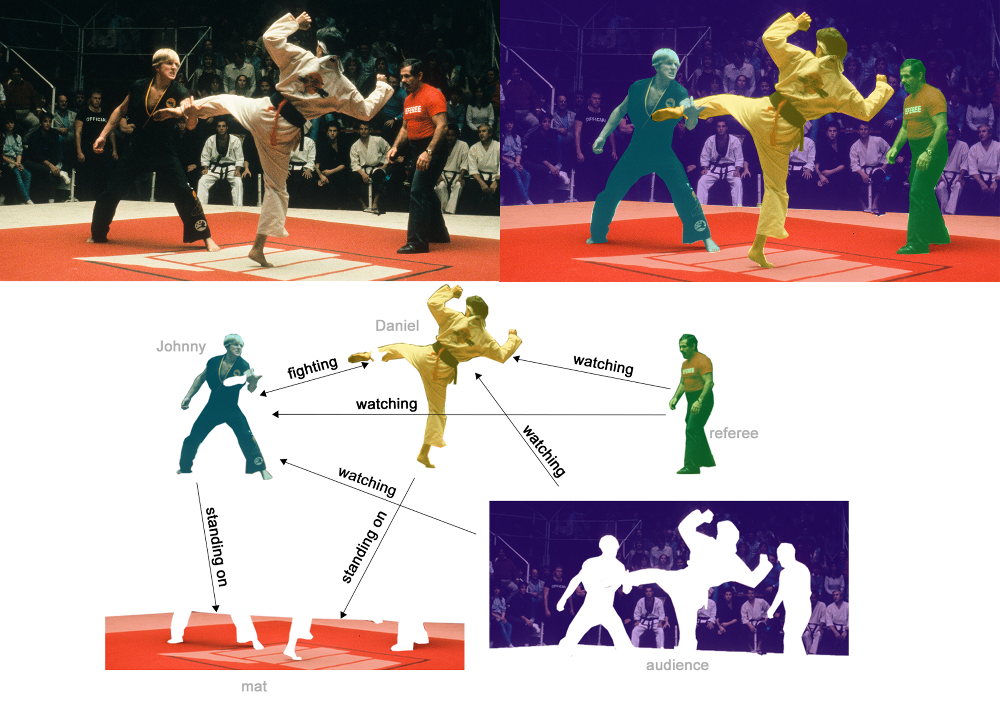
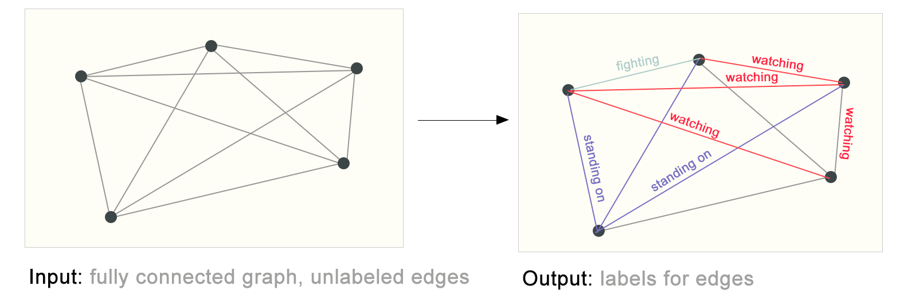
要用神经网络解决这些图任务，首先需要一种模型可以处理的图表示。
机器学习模型通常接收矩形或网格状数组。图可能包含四种预测信息，即节点、边、全局上下文和连通性。前三种较容易表示。例如，给每个节点分配索引 $i$，在特征矩阵 $N$ 中存放节点 $i$ 的特征。矩阵行数可变，仍能用常规方法处理。
连通性的表示更复杂。邻接矩阵很容易转成张量，但也有缺点。从数据集表可见，有的图有数百万个节点，而各节点的边数可能相差很大。邻接矩阵往往非常稀疏，存储效率低。
另一个问题是，同一种连通关系能用许多不同的邻接矩阵编码。普通深度网络未必对这些矩阵给出同样的结果，也就是没有保证置换不变性。
例如，前面的《奥赛罗》图可以用下面两个等价的邻接矩阵来描述。其他节点编号顺序也能得到等价矩阵。
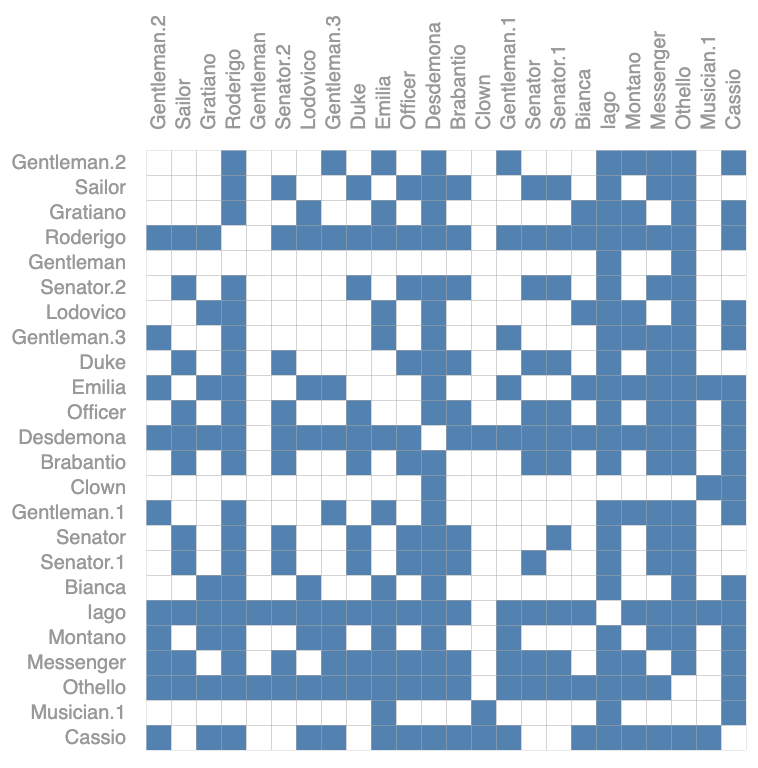
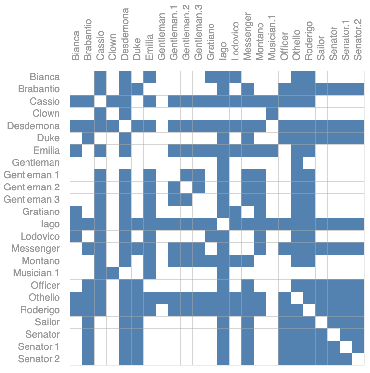
下面展示了一个四节点小图的所有邻接矩阵。即便如此，数量已经不少。节点更多的《奥赛罗》图则很难穷举。
邻接列表是节省存储空间的稀疏表示。把节点 $n_i$ 和 $n_j$ 间的边 $e_k$ 记成列表第 $k$ 项中的二元组 $(i,j)$。边数通常远小于邻接矩阵的项数 $n_{nodes}^2$，这样可以跳过不相连部分的计算和存储。
下面看看用这种方式表示图时，图上的信息可以怎样存放。
图中用标量表示节点、边和全局属性。实践中，图属性通常是向量。比如节点张量的形状从 $[n_{nodes}]$ 变为 $[n_{nodes}, node_{dim}]$，其他属性同理。
有了图的数值表示，就可以用图神经网络处理预测任务。GNN 对图上的节点、边和全局上下文等属性执行可优化的变换，同时保持图的置换对称性。下文采用 Gilmer 等提出的消息传递神经网络框架
把上面构造的图表示中的标量换成向量，就可以搭建 GNN。最简单的架构为每种节点、边与全局属性学习新的嵌入，此时还没有用到图的连通性。
这个 GNN 对不同图属性使用各自的多层感知机（MLP），也可以换成别的可微模型。我们称这一组运算为一层 GNN。节点向量经过节点 MLP 得到新向量，边也以相同方式更新。对全局上下文向量单独操作，可学习整张图的嵌入。
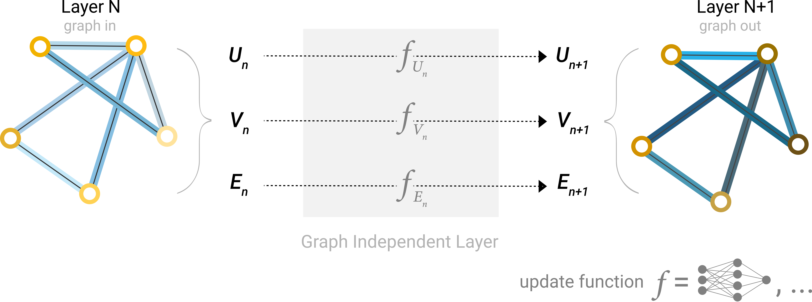
与常见神经网络的模块一样，可以堆叠多个 GNN 层。
连通关系没有更新，因此输出可以沿用输入的邻接列表与特征向量数量。节点、边和全局上下文的嵌入则都经过了更新。
简单 GNN 已经搭好，怎样用它完成前面提到的预测？
先考虑二分类。框架也可以扩展到多分类与回归。图已经有节点特征时，可以直接对各节点嵌入应用线性分类器来完成节点二分类。
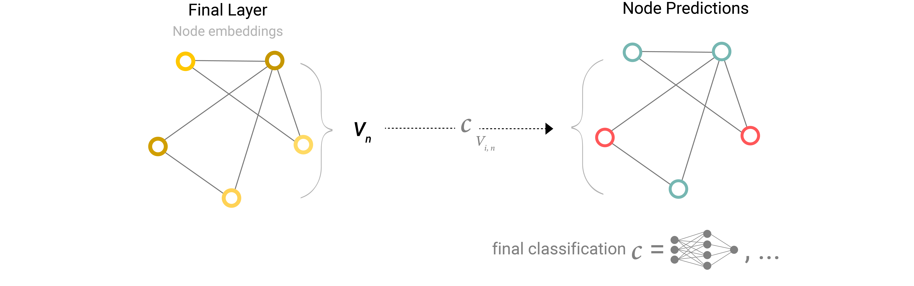
如果只有边上有信息，但又要预测节点，就需要把边的信息汇集到节点上。这可以通过池化完成，包含两步。
先收集参加池化的各项嵌入，把它们拼成矩阵。
再聚合收集到的嵌入，常用方法是求和。
用 $\rho$ 表示池化。从边收集信息到节点可以写作 $\rho_{E_n\to V_n}$。
若只有边特征，却要预测节点的二元类别，可以用池化把信息传到需要它的位置。模型如下图所示。
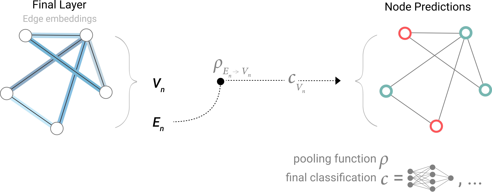
若只有节点特征，却要预测边的二元属性，则可以用下图的模型。
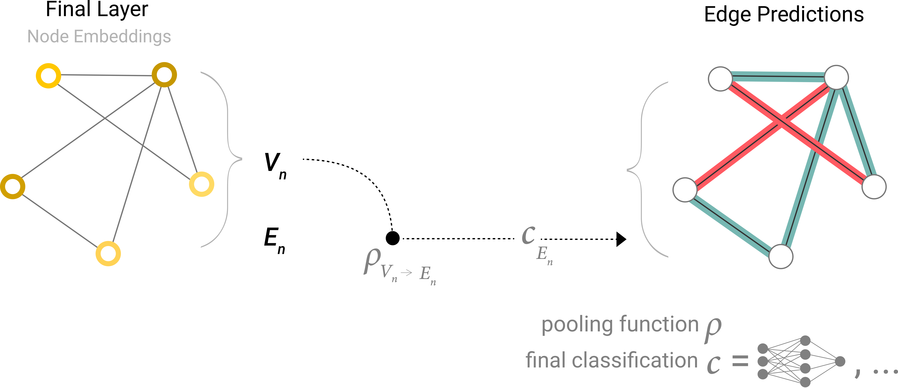
若只有节点特征，却要预测一个二元的全局性质，就需要收集并聚合所有节点的信息。这类似 CNN 的全局平均池化层，也可以对边执行同样的操作。
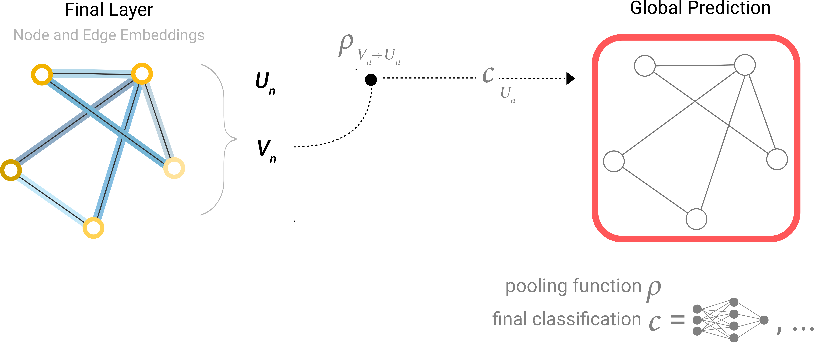
示例里的分类模型 $c$ 可以换成其他可微模型，也可以用广义线性模型扩展为多分类。
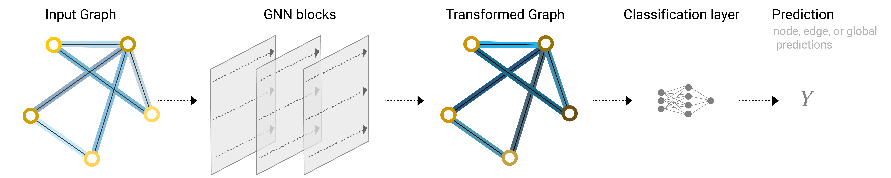
现在已经可以构造一个简单 GNN，并通过图的各部分传递信息来完成二分类。池化也是更复杂 GNN 的基础。引入新的图属性后，只需定义如何在属性之间传递信息。
在这个最简单的 GNN 中，各节点、各边和全局上下文在层内独立处理。图的连通性只在为预测执行池化时使用。
如果在 GNN 层内部也使用池化，学到的嵌入就能感知图的连通性。可以采用消息传递
消息传递分三步。
对每个节点，收集所有相邻节点的嵌入或消息，也就是前面提到的函数 $g$。
用聚合函数汇总消息，例如求和。
将汇总后的消息送入更新函数，通常是一个可学习的神经网络。
池化可作用于节点或边，消息也可以在节点之间或边之间传递。
这些步骤让 GNN 能利用图的连通性。接下来构造表达能力更强的消息传递层。
执行一遍这组操作，就得到最简单的消息传递 GNN 层。
这类似标准卷积。两者都会聚合并处理邻居的信息，以更新当前元素的值。在图上，元素是节点，在图像里则是像素。区别在于图节点的邻居数可变，而图像卷积通常使用固定大小的像素邻域。
堆叠多个消息传递层后，节点能逐步汇集更远的信息。经过三层，节点就能接收到距离三步的节点的信息。
把这条新的节点信息来源加入架构图。
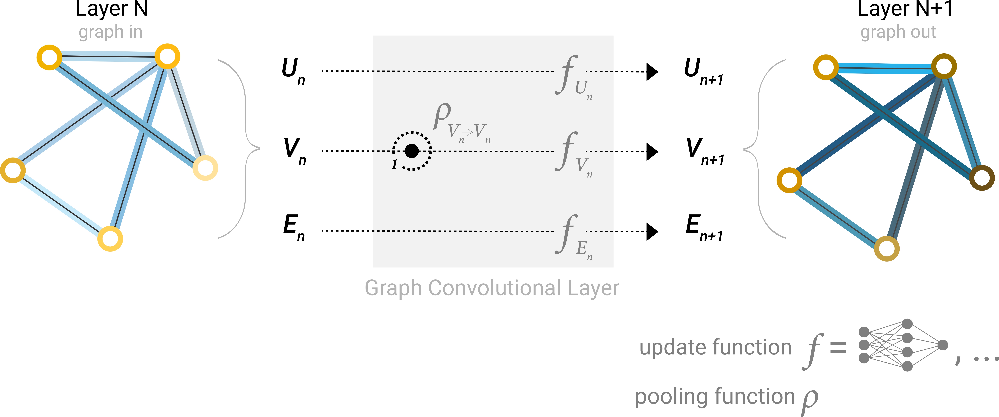
数据集不一定同时具备节点、边和全局信息。之前的做法是在最终预测时把边信息池化到节点。现在可以通过消息传递，在 GNN 层内部就让节点与边共享信息。
像处理相邻节点一样，先把相邻边的信息池化，再用更新函数变换并存储结果。
节点和边的信息可能有不同尺寸或形状。可以学习从边空间到节点空间的线性映射，反向也一样。另一种方法是在进入更新函数之前把两者拼接起来。
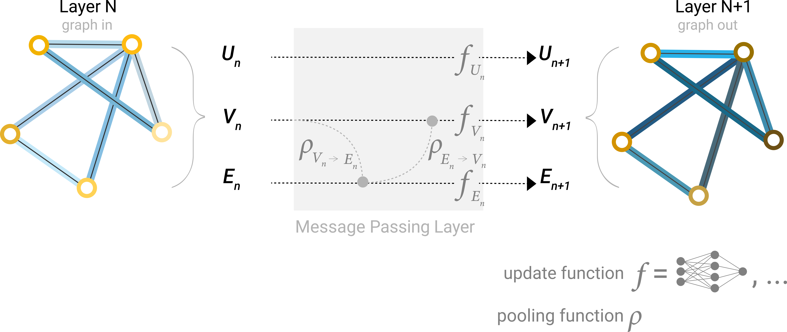
构建 GNN 时，要决定更新哪些图属性以及更新顺序。例如可以先更新节点，再更新边，也可以反过来。研究中还有“编织”式更新
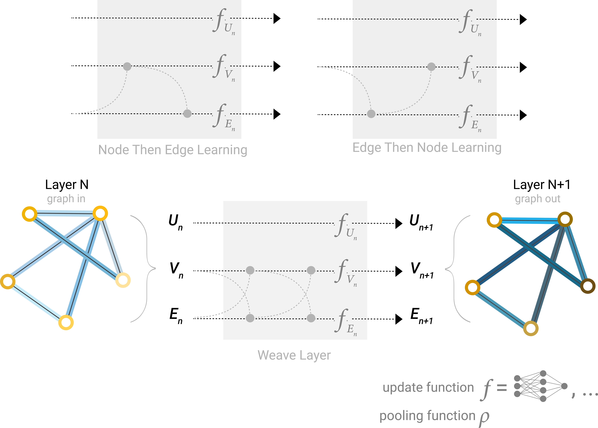
前面的网络有一个局限。相距很远的节点即使经过多轮消息传递，也可能无法高效交换信息。堆叠 $k$ 层只会让信息传播最多 $k$ 跳。当预测依赖相距很远的节点或节点组时，这会成为问题。可以让所有节点互相传递消息，这种“虚拟边”方法用于过分子等小图，但在大图上的计算代价很高
另一种办法是使用图的全局表示 $U$，也称主节点
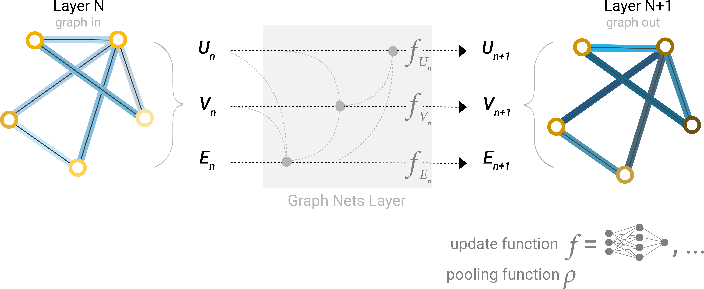
各类图属性都有学习到的表示，因而在池化时可以用其他属性为当前属性提供条件。例如，更新一个节点时，可以结合相邻节点、所连的边和全局信息。可以直接拼接，也可先用线性映射将它们变换到同一空间再相加，或使用逐特征调制层
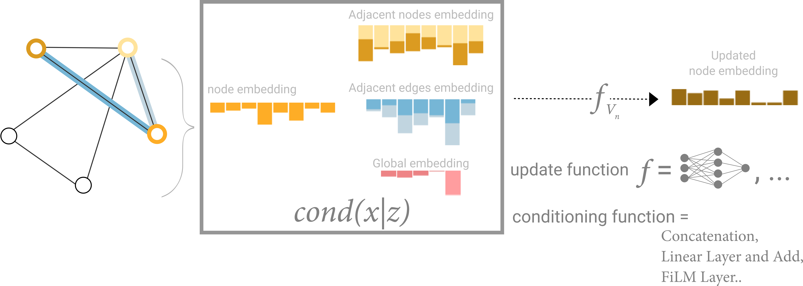
上面介绍了许多 GNN 组件。不同的组合在实际任务上会有什么区别？实验台可以用来观察不同组件与架构怎样影响模型学习。
这里用小分子图做图级预测。Leffingwell 气味数据集
为简化问题，每个分子只有一个二元标签，由专业调香师判断气味是否“刺鼻”。刺鼻指强烈而鲜明的气味。大蒜、芥末中可能含有的烯丙醇就有这样的气味。常用于薄荷糖调味的胡椒酮也被描述为带有刺鼻气味。
每个分子表示成一张图。节点的独热向量编码原子种类（碳、氮、氧、氟），边的独热向量编码键类型（单键、双键、三键或芳香键）。
模型由多个 GNN 层依次堆叠，最后用线性模型和 sigmoid 激活做分类。可以调整以下设计选项。
GNN 层数，也叫深度。
更新后的各类属性的维度。更新函数是带 ReLU 激活的一层 MLP，并用层归一化处理激活值。
池化使用的聚合函数，可选最大值、均值或求和。
更新的图属性或消息传递方式，包含节点、边和全局表示，可以分别开启或关闭。基线模型关闭所有消息传递，只在最后把数据聚合成全局属性。全部开启则得到 Graph Nets 架构。
为了理解 GNN 怎样学习适合任务的图表示，可以查看倒数第二层的激活。这些“图嵌入”是最终预测前的输出。分类器采用广义线性模型，因此用线性投影就能观察模型在决策边界附近学到了什么样的表示。
这些向量维度较高，因此用主成分分析（PCA）把它们降到二维。理想情况下，不同标签可以清楚地分开。降维以及模型自身的误差都可能使边界不易观察。
试着切换模型架构。也可以编辑左边的分子，尝试提高模型预测值。相同的编辑会对不同架构产生同样的影响吗？
你可能发现有些架构表现更好。有没有普遍有效的选择，例如更深的层数，或某一种聚合函数？答案取决于数据
下面的交互图用于比较此任务中的 GNN 架构，重点观察消息传递方式、嵌入维度、层数和聚合函数。
散点图里每个点是一个模型。横轴为可训练参数数目，纵轴为性能。悬停可查看架构参数。
首先可以看到，参数数量更多与更高性能相关。不过 GNN 的参数效率较高，约三千个参数的模型中也已经能找到表现很好的实例。
接着比较不同图属性的表示维度与性能分布。
维度较大时，平均性能与较差模型的表现往往更好，但最高性能没有相同的趋势。部分低维模型仍能取得很好的结果。更高维度也会带来更多参数，这和上一张图的观察一致。
下面按 GNN 层数查看性能。
箱线图的趋势类似。层数增加时平均性能有所提高，但表现最好的模型使用两层，而非三层或四层。四层模型中较差结果的下界反而降低。以往研究也有类似观察。层数越多，信息传播越远，反复聚合可能使节点表示被逐渐稀释
在这个数据集上，哪种聚合运算表现更好？下图按聚合方式展示性能。
整体来看，求和的平均表现略高，但最大值和均值也能得到同样好的模型。可结合后面聚合运算的区分能力和表达能力理解这一现象。
这些观察给出了不同的信号。复杂模型的平均表现有时更好，也有参数更少、层数更低或维度更小的模型胜出的反例。图属性间参与消息传递的数量则呈现较清晰的趋势。
下面按消息传递方式比较模型，两端分别是图属性之间完全没有消息和节点、边、全局属性全部参与消息传递。
参与通信的图属性越多，平均性能越好。任务是全局预测，所以显式学习全局表示也往往有帮助。此处节点表示似乎比边表示更有用，这与节点承载较多信息相符。
进一步改进性能有许多方向。这里强调两类，一类是更复杂的图算法，另一类是图自身的构造。
前面的 GNN 基于邻域池化。一些图概念较难用这种方式表达，例如线性的节点链。怎样在 GNN 中提取、处理并传播这些信息，是当前的研究方向
一个研究前沿是怎样构造可利用更多关系的图。前面的实验提示，属性之间加强交流可能改善模型。在这个例子中，可以为分子图添加额外的空间关系、非化学键边，或者在子图之间定义可学习的关系。
接下来介绍与 GNN 相关的其他图问题。
前面只介绍了图属性由向量表示的情形。图结构还可以承载其他类型的信息。消息传递框架较灵活，适配更复杂的图往往只需定义新图属性如何传递和更新信息。
在多重图
在超图
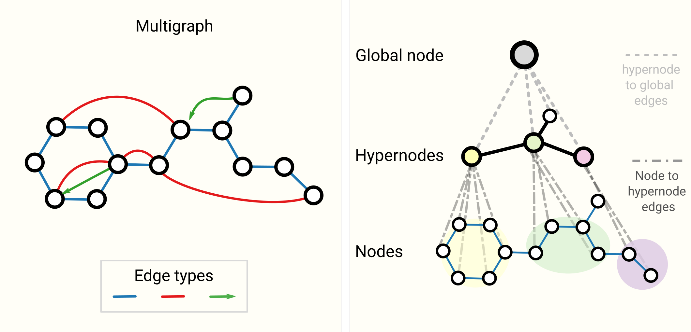
如何设计和训练含多种图属性的 GNN，仍是研究中的问题
训练神经网络时，常用从训练数据随机抽取的固定大小小批次计算梯度。图中相邻节点和边的数量不固定，给批处理带来困难。通常要构造保留原图关键性质的子图，从原图抽取节点与边。采样依赖场景。对引文网络合适的做法，对分子可能改变过多，因为子图可能对应另一个更小的分子。怎样采样仍是开放问题
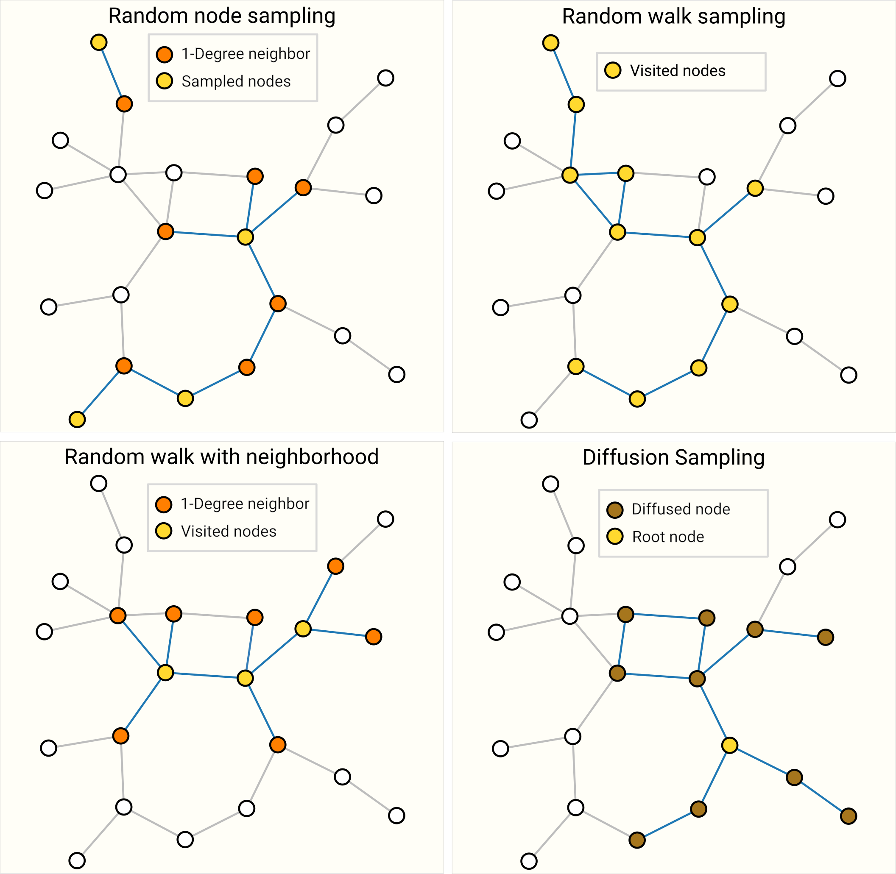
当整张图大到放不进内存时，采样特别重要。它促成了 Cluster-GCN
针对特定类型的数据建模时，可以利用数据自身的规律。设计得当时，预测性能和泛化能力往往更好，训练时间和参数量也可减少。
做图像识别时，图中的狗在左上角或右下角都还是狗。图像模型常用卷积来利用这种平移规律。文本则高度依赖词元顺序，所以循环网络按序处理数据。一个词元，例如“not”，可能改变后面整句的意思，因而需要能关注文本其他位置的组件，BERT 和 GPT-3 等 Transformer 可以做到。这些都是归纳偏置的例子。识别数据中的对称性或规律后，就能选用相应的建模组件。
在图中，我们关注节点、边和全局属性之间的关系，因此希望模型具有关系归纳偏置
从相邻节点和边池化信息是 GNN 的关键。节点的邻居数量可变，聚合应支持变长输入，并与输入顺序无关，同时要能用于梯度学习。
怎样设计合适的聚合运算仍在研究中
没有一种运算在所有情况下都最好。邻居数变化大或需要归一化视图时，均值很有用。想突出邻域中单个显著特征时，可用最大值。求和反映局部特征的整体分布，因没有归一化也可能放大离群项。实践中常用求和。
聚合函数的设计与集合上的机器学习交叉
另一种理解方式是，把逐层查找一跳邻居的 $k$ 层 GCN 或 MPNN 看成在 $k$ 跳子图嵌入上运算的神经网络
观察某个节点，经过 $k$ 层后，它的表示可看到最多 $k$ 跳以内的邻居，形成局部子图表示。边的表示也有类似性质。
因此，GCN 可以从一个节点或一条边的视角收集子图信息，并学习向量表示。可能的子图数量会组合式增长，事先穷举代价很高，GCN 则在逐层计算中动态构建表示。
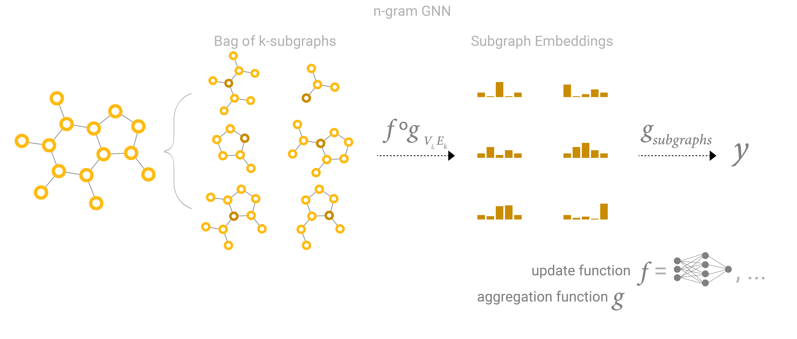
边预测与节点预测看起来不同，实际上经常可以相互转换。图 $G$ 上的边预测可表述为 $G$ 的对偶表示上的节点预测。
可以通过将节点与边的角色互换来构造 $G$ 的对偶表示。两种表示表达相同的信息，换一种表示有时更容易求解，类似在傅里叶空间观察频率。要在 $G$ 上对边分类，可以在其对偶表示上做图卷积，也就是学习 $G$ 的边表示。对偶–原始图卷积网络采用了这个思路
怎样在实际中实现图卷积和消息传递？本节看看矩阵乘法的性质，以及它与消息传递、图遍历的关系。
将 $n_{nodes}\times n_{nodes}$ 的邻接矩阵 $A$ 与 $n_{nodes}\times node_{dim}$ 的节点特征矩阵 $X$ 相乘，便实现一次求和消息传递。令 $B=AX$，则 $B_{ij}=\sum_k A_{ik}X_{kj}=\sum_{k:A_{ik}>0}X_{kj}$，最后一个等式适用于二值邻接矩阵。这相当于汇集与节点 $i$ 相连的所有节点的第 $j$ 维特征。这一步只做池化。要更新表示，可以在乘法前后对 $X$ 或聚合结果使用 MLP 等可微变换。
这样看就能理解邻接列表的优点。$A$ 通常很稀疏，可以跳过 $A_{ij}=0$ 的位置，直接按索引取出存在边的项。这种方法也让我们可以选择求和以外的聚合操作。
重复这一步，信息就能传播得更远。邻接矩阵的幂揭示了矩阵乘法与图遍历的关系。$(A^2)_{ij}=\sum_k A_{ik}A_{kj}$ 统计从 $i$ 到 $j$、长度为 2 的游走数。只有 $i$ 与中间节点 $k$ 相连且 $k$ 与 $j$ 相连时，对应乘积才贡献一次。对所有 $k$ 求和，就计算了所有可能的中间节点。这个解释可推广到 $A^3=AA^2$ 及 $A^k$。
关于把矩阵视为图，还有更深入的联系可供探索
图属性还可借助注意力传递信息
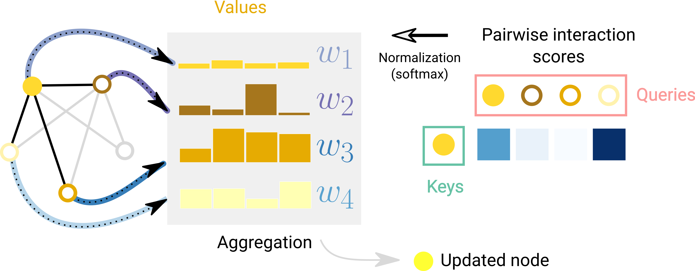
Transformer 也可看成带注意力机制的 GNN
部署 GNN 时，可解释性有助于建立信任、调试模型或支持科学发现。关心什么取决于场景。对于分子，可能关心某个子图是否出现
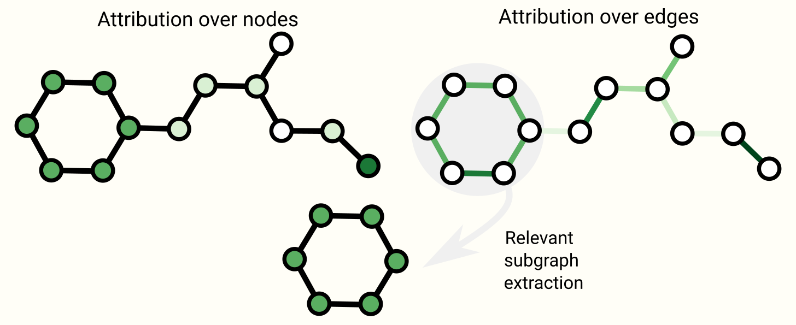
除了做预测，还可以学习图生成模型。可以从学到的分布采样得到新图，也可以从初始图出发补全它。在新药设计中，可以生成有特定性质的新分子图，作为治疗疾病的候选。
一个关键挑战是建模大小变化很大的图拓扑。邻接矩阵有 $N_{nodes}^2$ 个元素。一种方法是像处理图像那样用自编码器直接建模邻接矩阵
也可以从初始图出发，反复增删节点或边，逐步构建图。处理离散动作时可使用策略梯度。已有工作使用 RNN 等自回归模型
图是表达能力丰富的结构化数据，与图像和文本相比有不同的优势和挑战。本文回顾了用神经网络处理图的一些里程碑，也讨论了架构中的重要设计选择。希望 GNN 实验台能让你亲手观察这些选择在数据上的影响。近年 GNN 的发展为许多新问题提供了机会，值得继续探索。
感谢 Andy Coenen、Brian Lee、Chaitanya K. Joshi、Ed Chi、Humza Iqbal、Fernanda Viegas、Jasper Snoek、Jennifer Wei、Martin Wattenberg、Patricia Robinson、Wesley Qian 和 Yiliu Wang 提供反馈与建议，也感谢 Michael Terry 审查代码。
许多 GNN 架构图参考了 Graph Nets 的图示。
所有作者均参与写作。
Adam Pearce 与 Emily Reif 制作交互图并设计图形样式。Benjamin Sanchez-Lengeling 与 Emily Reif 绘制了部分草图。Alexander B. Wiltschko 参与编辑与写作指导。
评审 1 · Chaitanya K. Joshi
评审 2 · Patricia Robinson
评审 3 · Humza Iqbal
If you see mistakes or want to suggest changes, please create an issue on GitHub.
Diagrams and text are licensed under Creative Commons Attribution CC-BY 4.0 with the source available on GitHub, unless noted otherwise. The figures that have been reused from other sources don’t fall under this license and can be recognized by a note in their caption: “Figure from …”.
For attribution in academic contexts, please cite this work as
Sanchez-Lengeling, et al., "A Gentle Introduction to Graph Neural Networks", Distill, 2021.
BibTeX citation
@article{sanchez-lengeling2021a,
author = {Sanchez-Lengeling, Benjamin and Reif, Emily and Pearce, Adam and Wiltschko, Alexander B.},
title = {A Gentle Introduction to Graph Neural Networks},
journal = {Distill},
year = {2021},
note = {https://distill.pub/2021/gnn-intro},
doi = {10.23915/distill.00033}
}